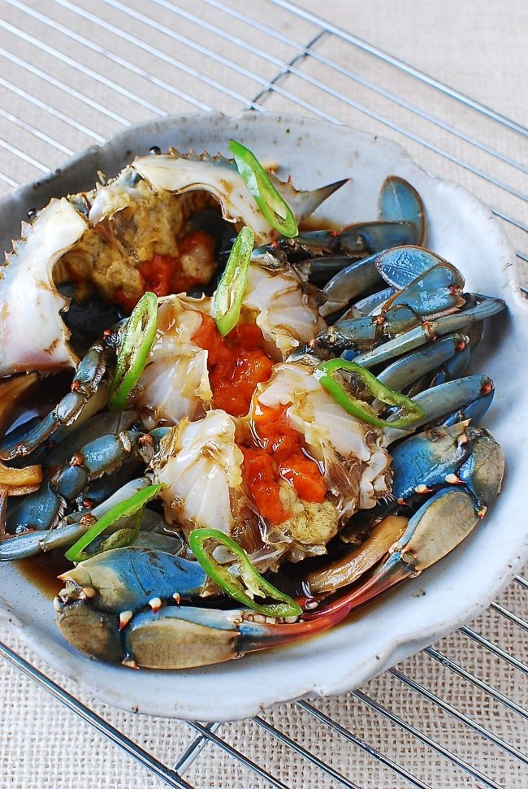

Ganjang Gejang

Description
Ganjang Gejang is raw crab marinated in a soy sauce based brine. This traditional dish
likely originating in the 17th century is commonplace in Korea where it is very popular
and ranges from a high quality, high price dish to a more modestly priced version
served in smaller villages near the base of mountains. The dish most often features the
horse crab that is native to East Asia.
The soy sauce brine is prepared by boiling a mix of spices, vegtables, peppers and
fruits before cooling it down and putting live crabs in it to cure them for a few days.
The curing process is analagous to ceviche. The dish is savory, sweet and surprisingly
refreshing. It is served with rice and other sides as is normally done in Korea. For
those in the United States such as myself, this dish can be found in Los Angeles and
New York City at the least.
Ingredients
- 5 live horse or blue crabs
For the brine
- 2 cups of soy sauce
- 1/2 cup rice wine
- 6 cups water
- 3 tablespoons sugar
- 1/2 medium onion
- 5-6 plump garlic cloves
- 3-4 thin ginger slices
- 1 piece dried kelp
- 1 small apple
- 1 bay leaf
- 1/2 teaspoon while black peppers
- 2-3 small dried whole red chili peppers
For the garhish
- 2-3 green or red chile peppers thinly sliced
- a few thin onion slices
- 3 thin lemon slices
Directions
- Place live crabs on ice until they slow down
- Bring the brine ingredients to a boil over medium high heat. Reduce to medium low
heat and boil covered for ~20 minutes. Remove the kelp after ~10 minutes of
boiling. Strain the brine and discard the fruit and veggies. Cool completely and
then refrigerate
- Clean each crab thoroughly with a brush and rince well.
- Place crabs in an airtight container. Add the chili pepper, onion and lemon slices.
Pour the brine over the crabs making sure they are all submerged (weighing down if
necessary). Refrigerate.
- After 1 day, strain the brine into a pot and bring to boil for a 3-4 minutes over
medium high heat. Once the brine has completely cooled, pour it back over the crabs.
- Repeat step 5. daily for 3-4 days then enjoy!
Home Page